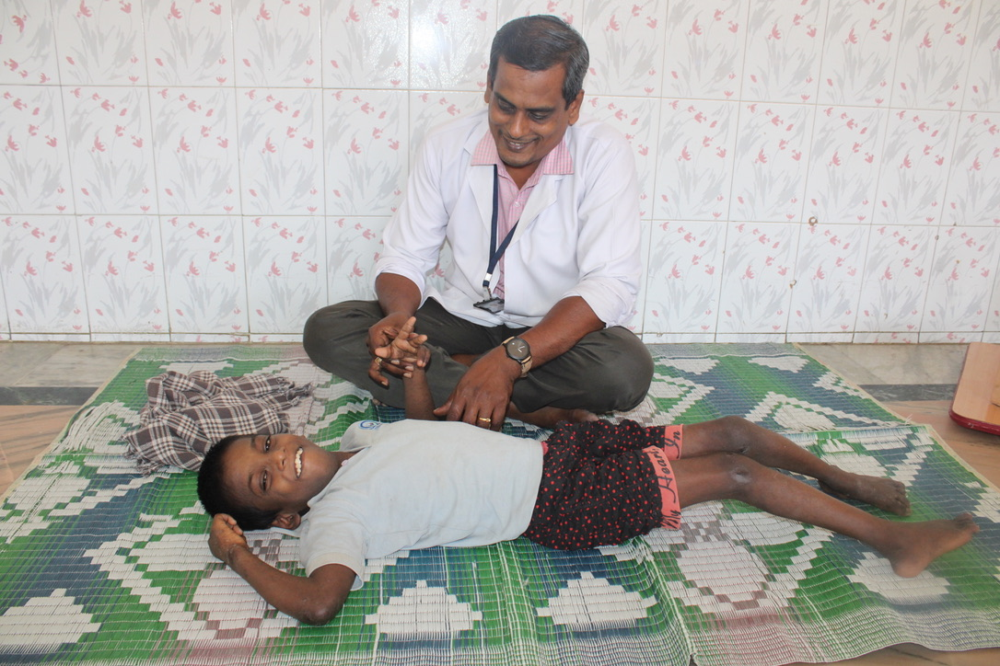

Daily 9:30 AM – 3:30 PM
Clinical Physiotherapy
Led by Mr. Robinson and a team of licensed therapists, children with cerebral palsy, muscular dystrophy, and neurological challenges receive electrical stimulation, muscular stimulation, TENS pain therapy, stretching, parallel bar walking, and static cycling.
"Rohit, a bedridden child with severe cerebral palsy, is now able to walk after two years of daily therapy!"